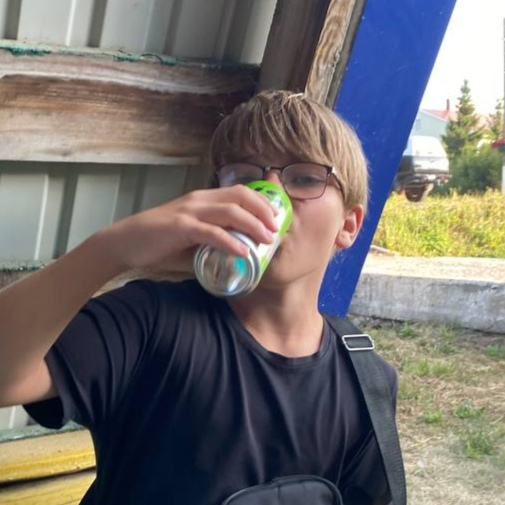
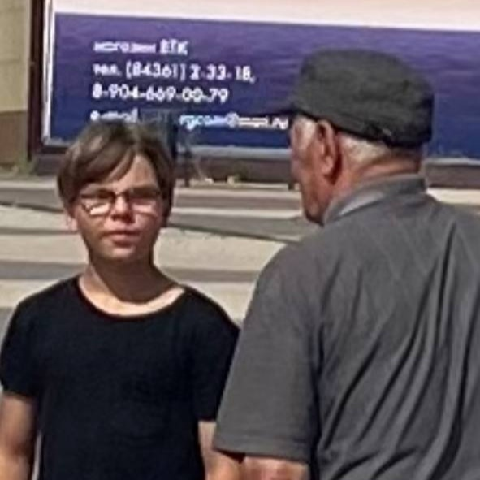
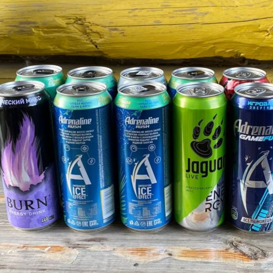
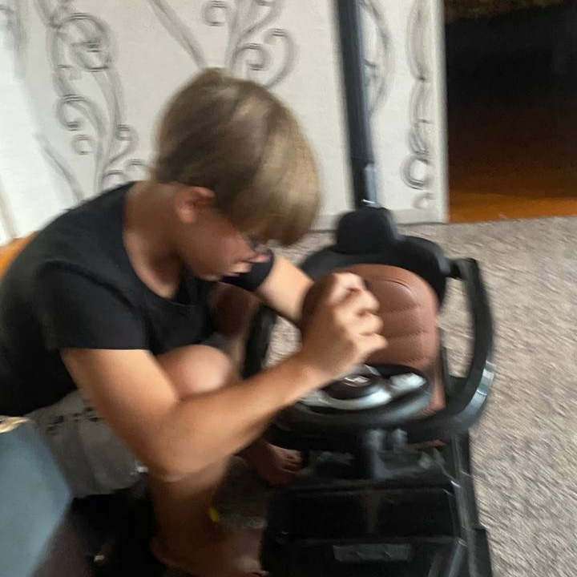

Наш земляк Хазеев Артем Эльвирович продолжает набирать популярность среди жителей Троицкого Урая. После прошлых публикаций и активной деятельности в социальных сетях, особенно в TikTok, Артем стал настоящей местной знаменитостью.
Напомним, что зимой 2025 года, в канун Нового года, местный житель Григорий высказал предположение о пристрастии Артема к энергетическим напиткам. Как выяснилось этим летом, его слова оказались пророческими.
Артем не только завоевал популярность в родном селе, но и расширил круг общения, познакомившись с самым известным местным дедушкой по кличке "Огурчик". Более того, слава нашего земляка достигла и соседнего поселка городского типа Рыбная Слобода, где он также стал узнаваемой фигурой.
Наши корреспонденты обнаружили в социальных сетях Артема фотографии, на которых якобы болшое количество энергетических напитков. Эта информация вызвала бурное обсуждение среди жителей.
После тщательного расследования выяснилось, что опубликованные фотографии были ошибочно приписаны Артему. Как оказалось, это был фейковый компромат, распространяемый недоброжелателями. Сам Артем пояснил, что действительно употребил энергетики, но исключительно с целью бодрствования во время ремонта своего премиального автомобиля "Гелендваген".
